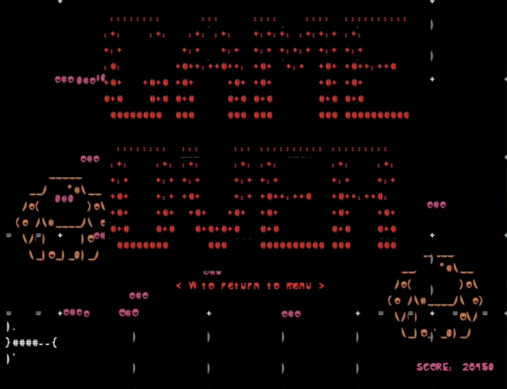
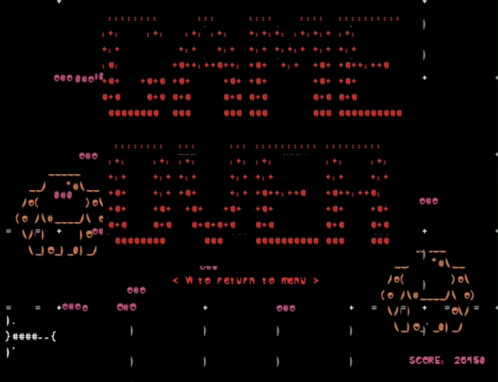

-= Spider Shoot = Itch.io Page =-
A small arcady final project of a college course made in a custom game engine of my own creation! The engine was made in c++ using the SFML library following predominantly what is described here: https://dragonfly.wpi.edu/
Standing out among the class, this project is hosted on the Dragonfly website as a worthy example.
-= Skills =-
-= Contributions =-
Worked on a team of two with creative direction being shared between us. The game was developed in the variant of the Dragonfly game engine I created.
Programming wise, I implemented the core world web system, spawning system, points system, Fly & Saucer behavior, and crossed intersection detection.
All art and audio (with the exception of the title text) was made solely by me.
 
